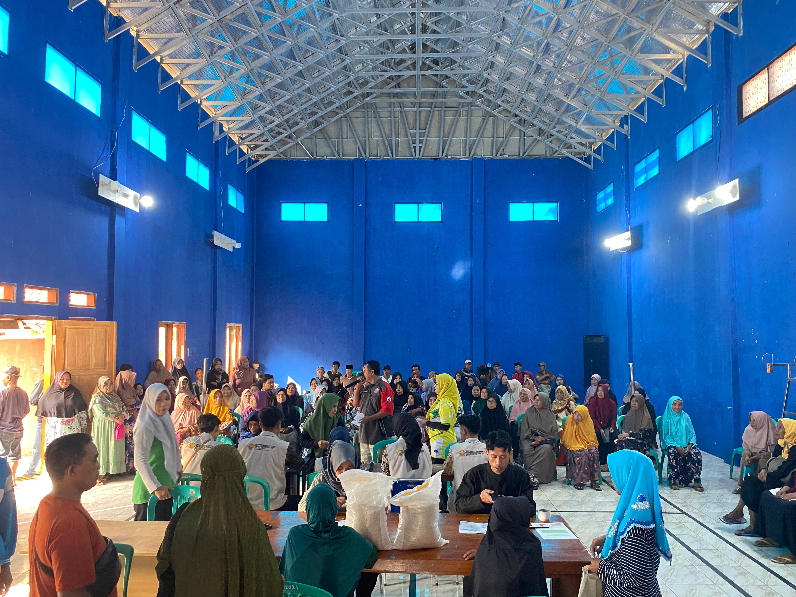

BANTUAN PANGAN DARI DINAS SOSIAL
Sukamaju - Pemerintah Kabupaten Cianjur melalui Dinas Sosial (Dinsos) kembali menunjukkan komitmennya dalam menjaga ketahanan pangan masyarakat dengan menyalurkan bantuan sosial. Bertempat di Aula Desa Sukamaju, ratusan Keluarga Penerima Manfaat (KPM) menerima bantuan pangan berupa beras seberat 20 kg per keluarga.
Berdasarkan pantauan di lokasi, Aula Desa Sukamaju tampak dipenuhi oleh warga yang telah terdata sebagai penerima bantuan. Sejak pagi, mereka dengan tertib mengantre untuk proses verifikasi data sebelum menerima bantuan yang telah disiapkan. Proses penyaluran berjalan dengan lancar dan teratur, dibantu oleh aparat desa serta para pemuda setempat yang turut memastikan kelancaran acara.
Kegiatan ini merupakan bagian dari program pemerintah untuk meringankan beban ekonomi warga, khususnya bagi keluarga prasejahtera. Bantuan beras ini diharapkan dapat membantu memenuhi kebutuhan pokok sehari-hari.
Salah seorang warga penerima bantuan mengungkapkan rasa syukurnya. "Alhamdulillah, bantuan ini sangat berarti bagi kami. Di tengah harga kebutuhan yang terus naik, beras 20 kg ini sangat membantu meringankan beban dapur keluarga untuk beberapa waktu ke depan," ujarnya.
Pemerintah Desa Sukamaju juga menyampaikan terima kasih kepada Dinas Sosial Kabupaten Cianjur yang telah merealisasikan program ini. Penyaluran bantuan yang tepat sasaran ini menjadi bukti nyata kehadiran pemerintah di tengah-tengah masyarakat yang membutuhkan.